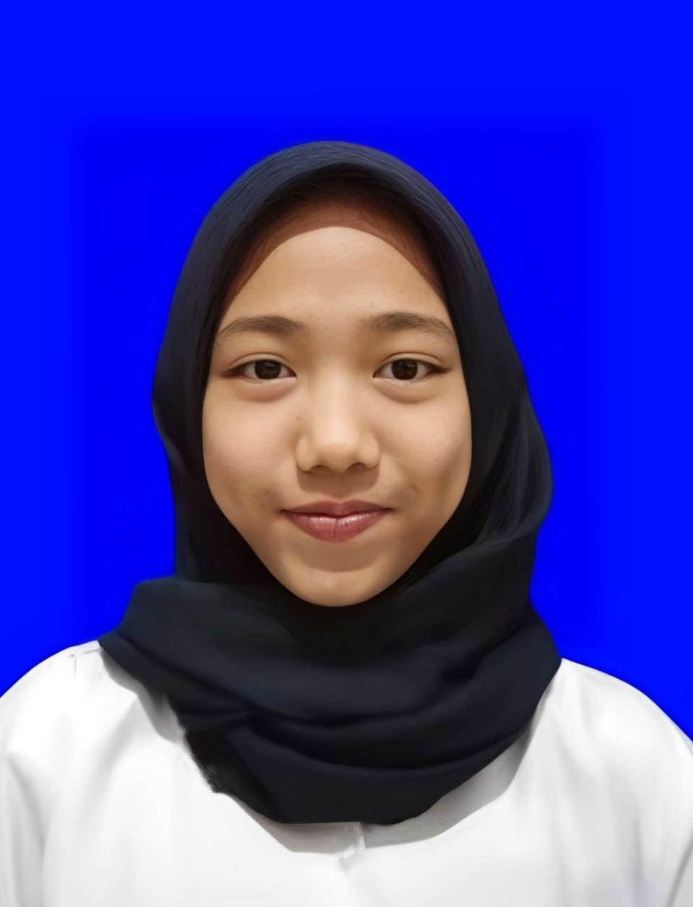

Galeri Aktivitas

Gambar 2: Dokumentasi Kegiatan Rohis

Gambar 3: Dokumentasi Kegiatan Kerja

Gambar 4: Dokumentasi Kegiatan Manesa English Time

Mahasiswa Program Studi Informatika
Saya adalah seorang mahasiswa Program Studi Informatika yang menempuh perkuliahan online sambil bekerja penuh waktu di bidang manufaktur (sewing). Saya menyukai hal-hal yang berkaitan dengan logika, pemecahan masalah, serta mempelajari keterampilan baru yang dapat meningkatkan kemampuan saya. Bagi saya, dunia teknologi bukan hanya tentang menulis kode, tetapi juga tentang menciptakan solusi yang bermanfaat dan terus belajar mengikuti perkembangan zaman.
Di luar aktivitas perkuliahan, saya senang mengeksplorasi berbagai hal yang dapat menambah wawasan dan kreativitas. Saya dikenal sebagai pribadi yang bertanggung jawab, mudah beradaptasi, dan berusaha menyelesaikan setiap pekerjaan dengan baik. Ke depannya, saya ingin terus meningkatkan kemampuan di bidang teknologi serta mengembangkan potensi diri agar dapat memberikan manfaat bagi lingkungan sekitar.
| Jenjang | Institusi/Sekolah | Tahun |
|---|---|---|
| S1 Informatika | Universitas Siber Asia | 2026 - Sekarang |
| MIPA | SMA Negeri 1 Mandirancan | 2021 - 2024 |
| Nama Kegiatan | Peran | Durasi |
|---|---|---|
| Manesa Computer | Anggota | 1 Tahun |
| Ekstrakurikuler Rohani Islam | Humas | 1 Tahun |
| Manesa English Time | Coord. Intermediate class | 3 Bulan |
Gambar 2: Dokumentasi Kegiatan Rohis
Gambar 3: Dokumentasi Kegiatan Kerja
Gambar 4: Dokumentasi Kegiatan Manesa English Time